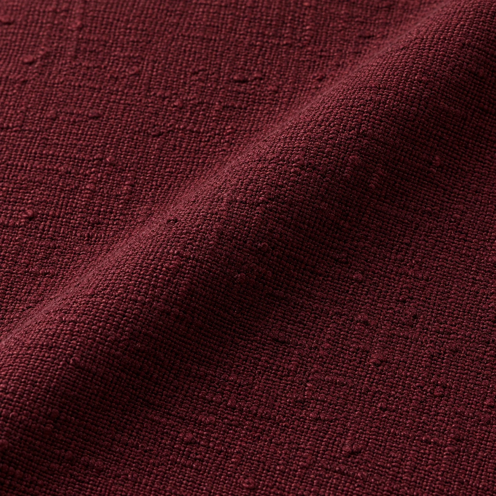
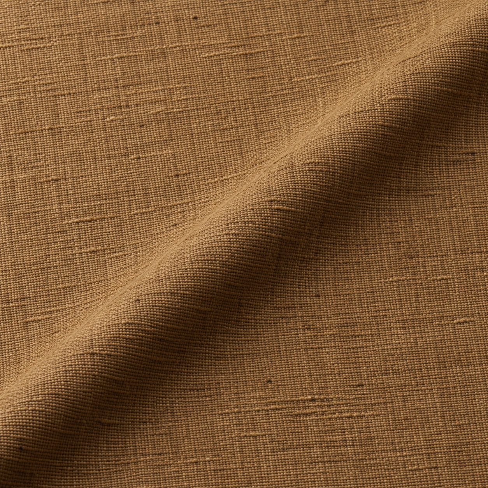

LZ-14
LZ-15 / Texture & Occasion / Khaddar
Zameen Khaddar
A camel study with a pronounced woven direction. Consider it for a shalwar kameez in winter.
Illustrative fabric guidePKR 4,290Mockup budget for a typical unstitched suit-cut reference. Actual length and price depend on width, measurements and garment.
- Shade direction
- Camel
- Surface study
- Pronounced woven direction
- Visual weight
- Substantial / design intent
- Intended use
- Shalwar kameez / Winter
- Fibre, width, care
- Confirm against selected physical stock
A more pronounced woven surface associated with cooler weather. Construction varies by source.
Build a fabric & tailoring briefThis is a concept image and product budget for a website mockup. It is not a photograph or specification of confirmed LOOMZ stock.
The surface / 01
Look closer.
Pronounced woven direction. The macro visual invites a closer reading of the cloth; the final decision belongs to a physical swatch, its composition and the way it will be cut.